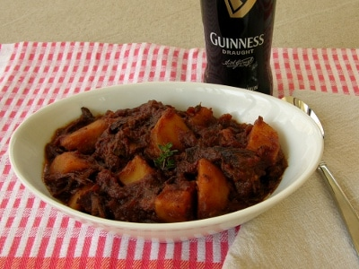

Back to recipe list
Beef In Beer

Ingredients
- 500g of cheap beef pieces (stewing steak usually is cheap)
- 500 mls of real ale
- 4 Large onions
- 2 Fat cloves of garlic
- Tbsp of plain flour
Method
- 1)Raw beef,roll it in the flour...fry 4 to 5 pieces at a time in a hot saucepan to seal...put to one side when all done.
- 2)Cut the onions into quarters...fry in the same frying pan as the beef...to soak up the juices.
- 3)Towards the end of frying the onion (they should be nicely brown round the edges) throw in the smashed up cloves of garlic.
- 4)Transfer the beef, onions, garlic to a deep casserole dish. Stir in the remaining flour.
- 5)Pour on the bottle of beer.
- 6.)Cover, and cook at 150 for about 2 and a half hours...wil be gorgeous when it comes out, trust me...serve with mash.